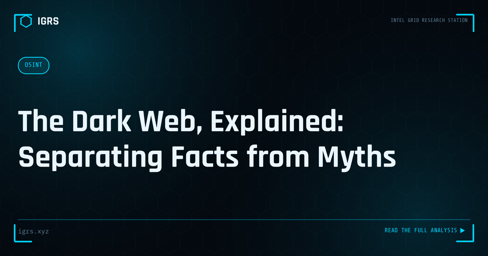

The Dark Web, Explained: Separating Facts from Myths
| File No. | OD-007/2026 |
| Subject | Factual overview of dark web architecture, lawful uses, risks and misconceptions |
| Category | Cyber Awareness |
| Author | Manuj Kumar Pandey |
| Published | 2026-05-20 |
| Reading time | 12 minutes |
The dark web is neither the bogeyman of TV crime dramas nor a harmless curiosity. Here is what it actually is, who uses it, and what the real risks are.
The Dark Web Demystified
The dark web occupies a peculiar place in public imagination — simultaneously mythologised and misunderstood. For investigators and security professionals, separating fact from fiction is essential. The dark web is real, it does host serious criminal activity relevant to Indian cybercrime, but it is neither as vast nor as impenetrable as popular media suggests. This guide explains what the dark web actually is and how it matters for investigation.
Surface Web, Deep Web, and Dark Web
| Layer | What It Is | Access |
|---|---|---|
| Surface web | Indexed, searchable content | Normal browsers, search engines |
| Deep web | Non-indexed content (email, banking, databases) | Normal browsers, requires login |
| Dark web | Intentionally hidden networks | Special software (Tor) |
A common misconception conflates the deep web with the dark web. The deep web is simply everything not indexed by search engines — most of the internet, including your email inbox. The dark web is a small, deliberately hidden portion requiring special tools to access.
How the Dark Web Works
The dark web operates primarily through Tor (The Onion Router), which routes traffic through multiple encrypted relays to anonymise both users and sites. Dark web sites use .onion addresses and are not reachable through normal browsers. This architecture provides genuine anonymity, which serves both legitimate privacy needs and criminal activity.
Legitimate Uses of the Dark Web
Despite its reputation, the dark web has legitimate uses: journalists and whistleblowers communicating securely, citizens in repressive regimes evading censorship, privacy-conscious users avoiding surveillance, and secure communication for sensitive purposes. Major news organisations operate dark web drop sites for sources. The technology itself is neutral; its uses span the full spectrum.
Criminal Activity on the Dark Web
The dark web does host serious crime relevant to Indian investigations:
- Stolen data marketplaces — credentials, financial data, PII
- Leaked Indian databases including Aadhaar and PAN data
- Drug and contraband marketplaces
- Hacking services and malware
- Fraud tools and tutorials
The Telegram Shift
An important trend for Indian investigators is the migration of much criminal activity from traditional dark web forums to Telegram. Breach data, fraud services, and criminal coordination increasingly happen on Telegram channels, which are more accessible than Tor-based sites. For India-focused threat intelligence, monitoring Telegram is often more productive than monitoring traditional dark web forums.
Is Accessing the Dark Web Legal in India?
Accessing the dark web via Tor is not illegal in India. The Tor network is legal technology. However, the legality depends entirely on activity: purchasing illegal goods, accessing illegal content, or conducting criminal transactions is illegal under the IT Act and BNS. Law enforcement uses the dark web for legitimate investigation. The tool is legal; criminal use of it is not.
Dark Web Investigation Techniques
Investigating the dark web requires specialised approaches: using Tor safely in isolated environments, monitoring marketplaces and forums for relevant activity, tracking threat actors across platforms, analysing cryptocurrency transactions that often accompany dark web commerce, and correlating dark web findings with surface web and other intelligence. The anonymity is not absolute — operational security mistakes by criminals, and blockchain analysis of payments, frequently enable attribution.
Dark Web Monitoring for Organisations
Organisations monitor the dark web to detect their data being traded, credentials being sold, or themselves being targeted. Tools like Have I Been Pwned, IntelX, and DeHashed, plus Telegram monitoring, provide early warning. Discovering your data on the dark web triggers breach response obligations under the DPDP Act and CERT-In directions, making monitoring a practical compliance and security tool.
Safety and OPSEC
Investigators accessing the dark web must practise strict operational security: use isolated, dedicated environments (virtual machines), never use personal accounts or identities, understand that some content is illegal to access regardless of intent, and maintain clear documentation of the legitimate investigative purpose. Careless dark web access can expose the investigator to both technical risk and legal complications.
Putting the Dark Web in Perspective
For Indian investigators, the dark web is a real but specific concern — a place where stolen Indian data is traded and certain crimes are coordinated, increasingly alongside Telegram. Understanding what it actually is, how it works, the legal boundaries, and the investigation techniques enables professionals to monitor and investigate dark web activity effectively. Demystified and approached methodically, the dark web becomes another domain of investigation rather than an impenetrable mystery.